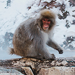
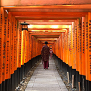

Nagano is famous for its snowy landscapes and ski resorts. I went there for the very first time last month and was mesmerized by the beauty of the region. The highlight of this trip was the national park of Jigokudani, where you can see monkeys bathing in (...)

Kyoto is the ancient capital of Japan, it attracts 5 million visitors every year. And the only positive side of the pandemic is that I could see this magnificent city free of tourists. Our first stop was the Fushimi Inari Shrine, which is well known for its row of red torii gates (...)